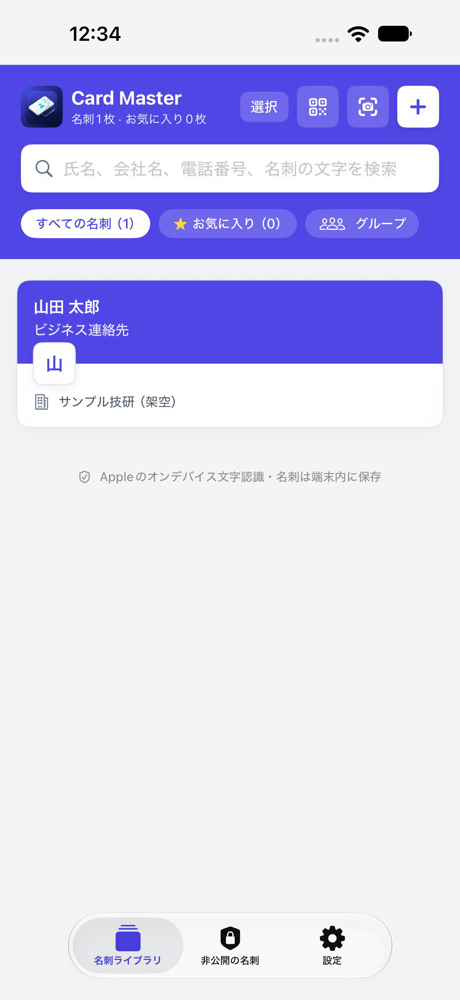

日本語の名刺を、手元で整理
日本語・英語・繁体字中国語の画面に対応。国／地域、部署、フリガナも記録できます。読み取り結果は保存前に確認・修正してください。
iPhoneで名刺を撮影し、Appleの端末内文字認識で整理。アプリのアカウント登録は不要。外部AIやクラウドAIへ名刺を送信しません。
内線、フリガナ、任意の裏面撮影に対応。商談や展示会で受け取った名刺を、次の出会いにつなげましょう。
提供状況と価格は、お使いのApp Storeでご確認ください。

Apple Visionで文字を読み取り、名刺データは標準で端末内に保存します。基本の撮影・読み取り・編集・検索はオフラインで利用できます。読み取り結果はご自身で確認してください。
業種分類の提案には、対応するiOS 26以降の端末、言語、Apple Intelligenceの端末内モデルが必要です。利用できない場合も、ルールと手動操作で整理できます。文字認識そのものにApple Intelligenceは不要です。
日本語・英語・繁体字中国語の画面に対応。国／地域、部署、フリガナも記録できます。読み取り結果は保存前に確認・修正してください。
表面だけで保存できます。裏面は後から撮影・写真から追加しても大丈夫。別言語の表記や製品・サービス情報も端末内で文字認識します。
電話番号に内線と待ち時間を設定。カンマ1つで2秒、2つで4秒の一時停止を設定し、連絡先やvCardにも保持します。接続先の案内に合わせて調整してください。
出会った日や場所、次回の訪問をカレンダーへ。アプリ内でApple標準の編集画面を開き、繰り返しや通知を設定できます。この機能は無料です。
会社、地域、業種、確認済みの製品・サービスを手がかりに整理。共通点は、実際の知り合いであることを意味しません。つながりマップは買い切りで解放されます。
Face ID、Touch ID、または端末のパスコードでロック。iPhoneの連絡先への追加は自分で選べるので、仕事の名刺をアプリだけで管理できます。
名刺の撮影・文字認識、任意の裏面追加、内線、編集、検索、グループ、非公開ロック、カレンダー編集、ローカル暗号化バックアップ。
広告を削除し、地図連携、つながりマップ、個人のiCloudへの暗号化バックアップ・復元を解放。サブスクリプションはありません。購入済みの方も追加購入は不要です。価格はアプリ内の購入画面でご確認ください。
いいえ。追加する名刺はご自身で選択します。アプリ内だけで管理することもできます。
任意の有料機能です。自分で操作したときだけ暗号化バックアップを保存します。リアルタイム同期ではありません。復元コードは別に保管してください。
基本の名刺処理はオフラインで利用できます。広告、購入、iCloudバックアップには通信が必要です。カレンダーや連絡先の同期は各アカウントの設定に従います。
いいえ。表面だけで保存できます。製品・サービスの候補は確認してから採用してください。